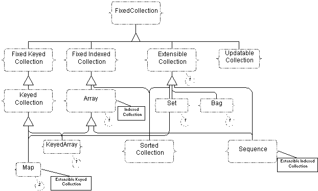

Previous TOC Next
Previous TOC Next 
| ChiMu Documentation Kernel Frameworks | Previous TOC Next |
| Concepts | Collection Types |
The first question to ask would be "Why does ChiMu have its own set of collection classes?" There are several reasons: other collection classes have poor separation of Type from Class, other collection classes have very poor naming habits, we have experience with good collection classes in Smalltalk (and so are spoiled), and we do not wish to get coupled into one company’s licensed product. We have no desire to have to develop collection classes, but there is no way to enhance existing collection classes to have an independent and cleaner type system. To make that happen requires modifying source files, which violates the standard license of most companies and loses the benefits of common collections anyway.
A final reason for having our own set of collection classes is that collection classes really are not very hard. The algorithms are all well documented as well as the code to implement them. The only problem is adding to the amount of necessary maintenance, but that is exchanged with having less maintenance on the framework’s clients side (that is, we expect ourselves to be much more responsive to our own demands than a vendor would be). Since the collection framework can be a real time-saver if it grows to what you need, this is a real advantage.
The ChiMu collections have many classes that wrap licensed classes (JDK, JGL, or CAL) or are transformations of public domain classes (Doug Lea’s) to conform to the type system.
The main concept for the Collection framework is that clients should only be concerned with the Type hierarchy when specifying functionality. All client typing of objects (classes, methods, and variables) should be done in terms of the type hierarchy. Choosing which implementations of the types is only relevant at object creation time and should only consider performance and code-base preference.

 |
Previous TOC Next | |
| Copyright (c) 1997, ChiMu Corporation. All Rights Reserved.
Confidential and Proprietary. Version R1.0.1. |